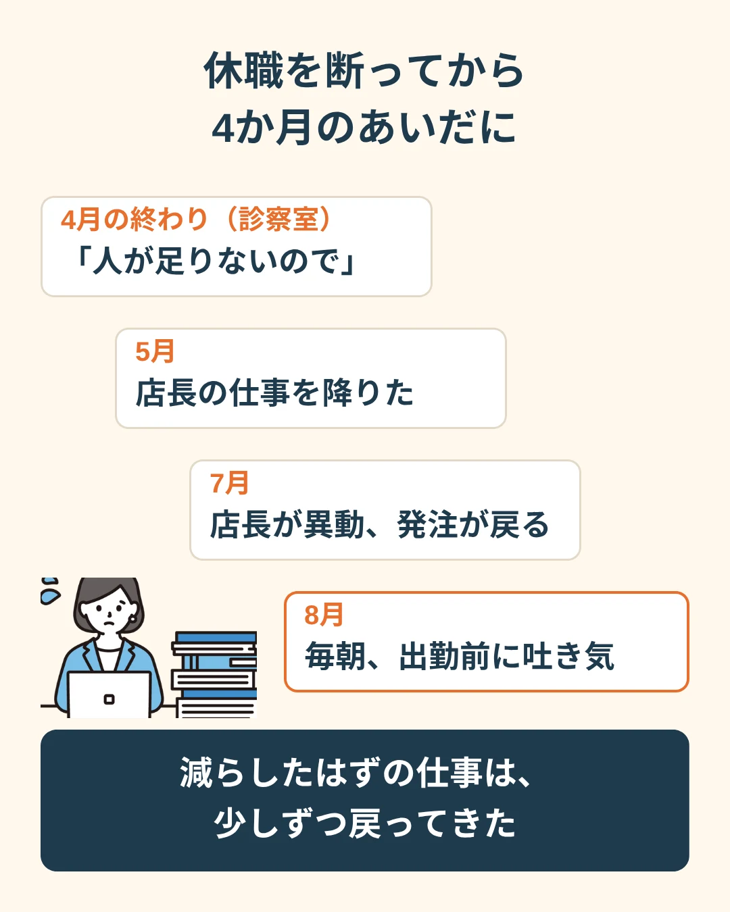
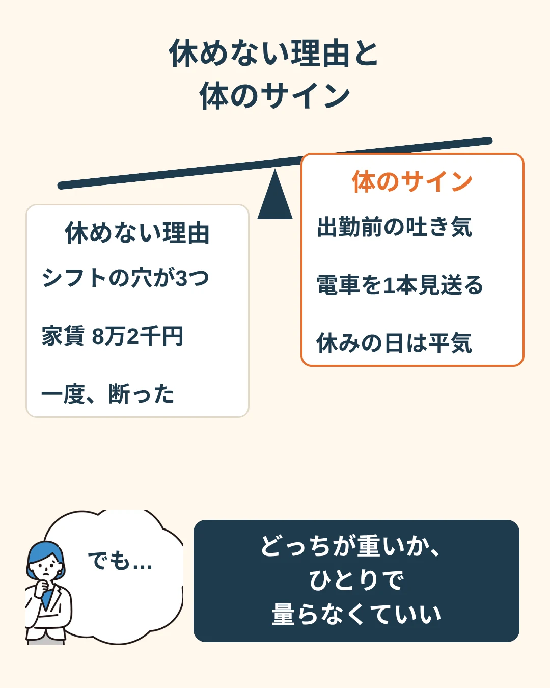
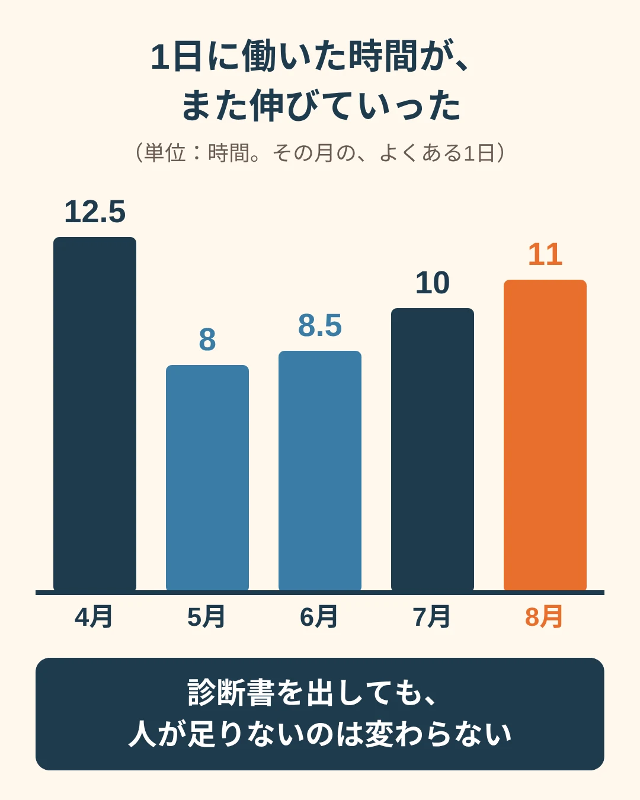
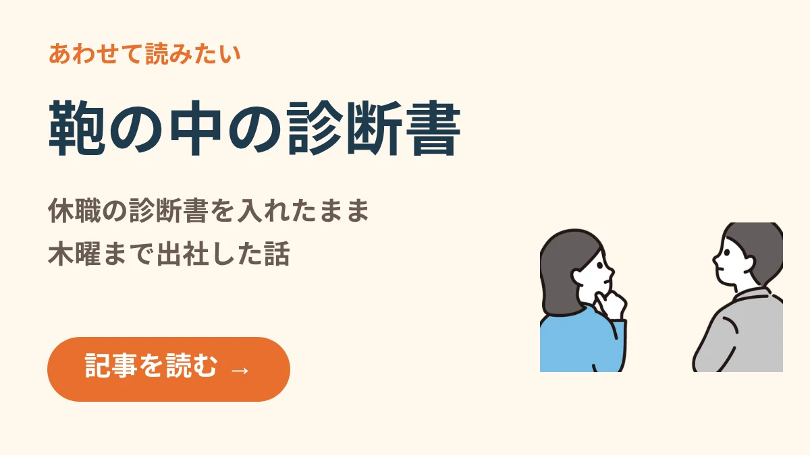
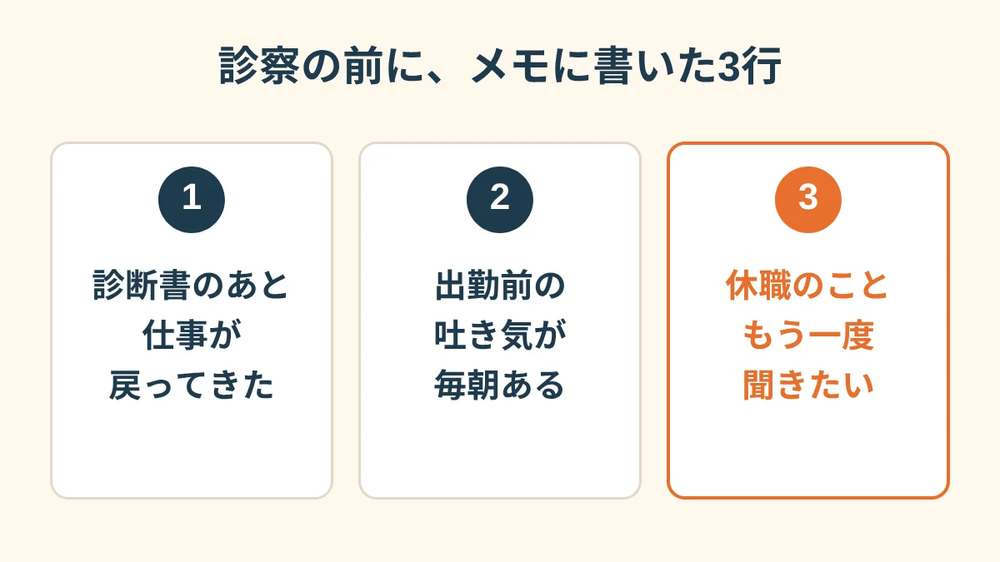

「少し、お休みを取りませんか。1か月くらい」
先生がそう言ったとき、私の頭の中では、来週のシフト表が開いていた。
火曜の早番。木曜の締め。土曜の朝の仕込み。私が抜けたら、穴が3つ。
「……人が足りないので、無理だと思います」
3秒も、かからなかった。
帰りの電車で、涙が止まらなかった
30歳。パンのチェーン店で、副店長をしている。
社員は店長と私の2人だけ。店長は2店舗をかけもちしていて、シフト作りも、発注も、月末の棚卸しも、いつのまにか私の仕事になっていた。
4月の終わりの木曜日。12時間半働いた帰りの電車で、急に涙が出てきた。
理由は、なかった。悲しいことがあったわけでもない。ドアの横に立って、窓の外を見ているふりをしながら、降りる駅まで止まらなかった。
次の日はたまたま公休だった。朝、駅前の心療内科に電話したら、キャンセルが出たとかで、午後に入れてもらえた。
先生は、私の話を最後まで聞いてから、「適応障害、と考えていいと思います」と言った。それから、冒頭の一言。
「人が足りないので」と答えると、先生は少し私の顔を見て、「じゃあ、仕事の量を減らすように、という診断書にしましょうか」と言った。
帰りの電車で、封筒を膝にのせて、ちょっとほっとしていた。休まなくてすんだ、と思った。
今思えば、ほっとするところが、ずれていた。
「医者に『休みましょう』って言われて、真っ先に浮かんだのが住宅ローンの引き落とし日でした。で、自分から『薬で様子を見ます』って言っちゃって。結局、半年後に休むことになるんですけど。あの半年、何を守ってたのか、いまだによくわからないです」
診断書を出して、店長の仕事を降りた
診断書は、本社に送った。
店長に相談して、閉店作業のない時間帯にしてもらった。シフト作りと発注は、店長に戻した。有給も、少しだけ使った。
5月は、わりと楽だった。8時間で帰れる日が続いた。
休みの日は、なんともなかった。日曜に家でホットケーキを焼いて、ちゃんとおいしかった。
出勤の日だけ、朝の電車でみぞおちが重くなる。休みの日は平気。この差が、自分でもよくわからなかった。
わからないから、「やっぱり大したことなかったのかも」のほうに入れておいた。
7月、店長が異動した
6月の終わりに、人事異動のお知らせが届いた。
店長が、新しくオープンするお店に移る。うちの店は、別の店の店長が、3店舗かけもちで見ることになった。
同じ週に、フリーターの子が「7月いっぱいで辞めます」と言った。
本当なら、このタイミングで私が店長になるはずだったんだと思う。私がこうだから、ほかの人が3店舗も見ることになった。申し訳なくて、情けなかった。それなのに、自分の体の心配ばかりしている自分も、嫌だった。
新しい店長は、週に1回しか来られない。
「発注だけ、ちょっと見ててもらえる？」
「ちょっとだけなら」と答えた。シフトの穴も、気づいたら私が埋めていた。

診断書は、本社のどこかの引き出しに入っているはずだった。でも店の中で、それを覚えている人は、もういなかった。
私も、言い出せなかった。だって、休職を断ったのは、私だから。
「先生に休職をすすめられたとき、『担任をしているので、3月までは』って答えたんです。子どもたちの顔が浮かんじゃって。でも2月に、朝、園の駐車場で車から降りられなくなって。エンジン切ったまま40分。結局、年度末を待たずに休みました。あのとき一回断ったこと、主任には言えなくて、今も『急に悪くなった』ってことにしてます」
一度断った休職を、もう一度
8月。出勤の朝に、吐き気がするようになった。毎朝。めまいも少し。
駅のホームで、乗るはずの電車を1本見送った日もあった。次の電車には乗れた。遅刻はしなかった。だから、誰にも気づかれなかった。

次の診察は、2週間先だった。
その日の夜、クリニックに電話して、「予約、早められますか」と聞いた。4日後に入れてもらえた。
電話を切ってから、怖くなった。「前に、休めないって言いましたよね」と言われたら、どうしよう。一度断ったのに、今さらお願いするのは、ずるい気がした。
お金のことも調べた。家賃は8万2千円。休んだら、給料はどうなるんだろう。
協会けんぽのページを開いた。傷病手当金は、病気で働けず給料が出ない日について、続けて3日休んだあとの4日目から出る。支給される期間は、支給が始まった日から通算で1年6か月。金額は、だいたい給料の3分の2くらいが目安らしい。
ゼロじゃない。家賃は、たぶん払える。それだけで、少し息ができた。
 傷病手当金（協会けんぽ）もらえる条件と期間が、上から順に書いてある。外部サイトが開きます →
傷病手当金（協会けんぽ）もらえる条件と期間が、上から順に書いてある。外部サイトが開きます →
それから、メモ帳に3行書いた。診察室で、また3秒で答えてしまわないように。

「5月の診断書のあと、仕事が少しずつ戻ってきた」
「8月から、出勤前の吐き気が毎朝ある」
「休職のこと、もう一度聞きたい」
3行目だけ、ボールペンで何度もなぞってしまって、字が太くなった。

診察の日の朝。
いつもの癖で、スマホのシフト表を開きかけて、閉じた。メモをコートのポケットに入れて、家を出た。
先生が何て言うかは、まだわからない。休むことになるのか、ならないのか。お店がどうなるのかも。
ただ、4月みたいに3秒で答えるのは、今日はやめようと思った。
休むと決めたあと、今度は会社に伝えるところで止まってしまう人もいる。診断書を鞄に入れたまま、木曜まで出社した人の話。

休職の診断書を鞄に入れたまま、木曜まで出社した5日間 →
この記事に、聞いてみたいことはありますか？
「自分の場合はどうなんだろう」と思ったことを、気軽に書いてみてください。いただいた質問は個別にお返事したうえで、匿名で記事にすることがあります。